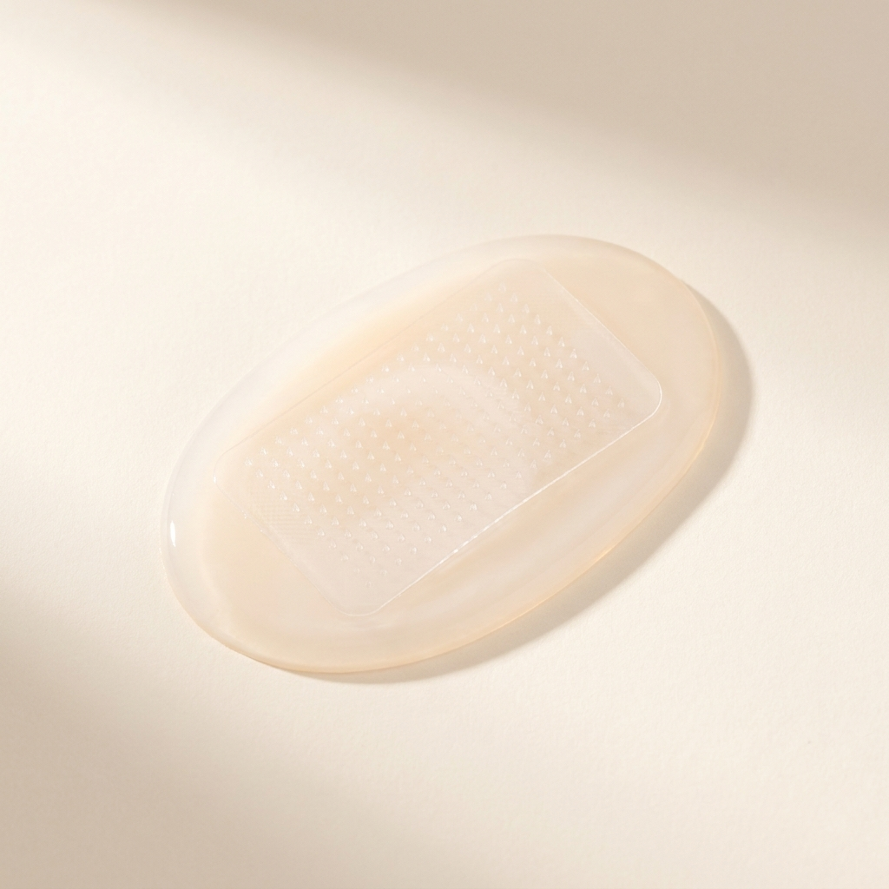
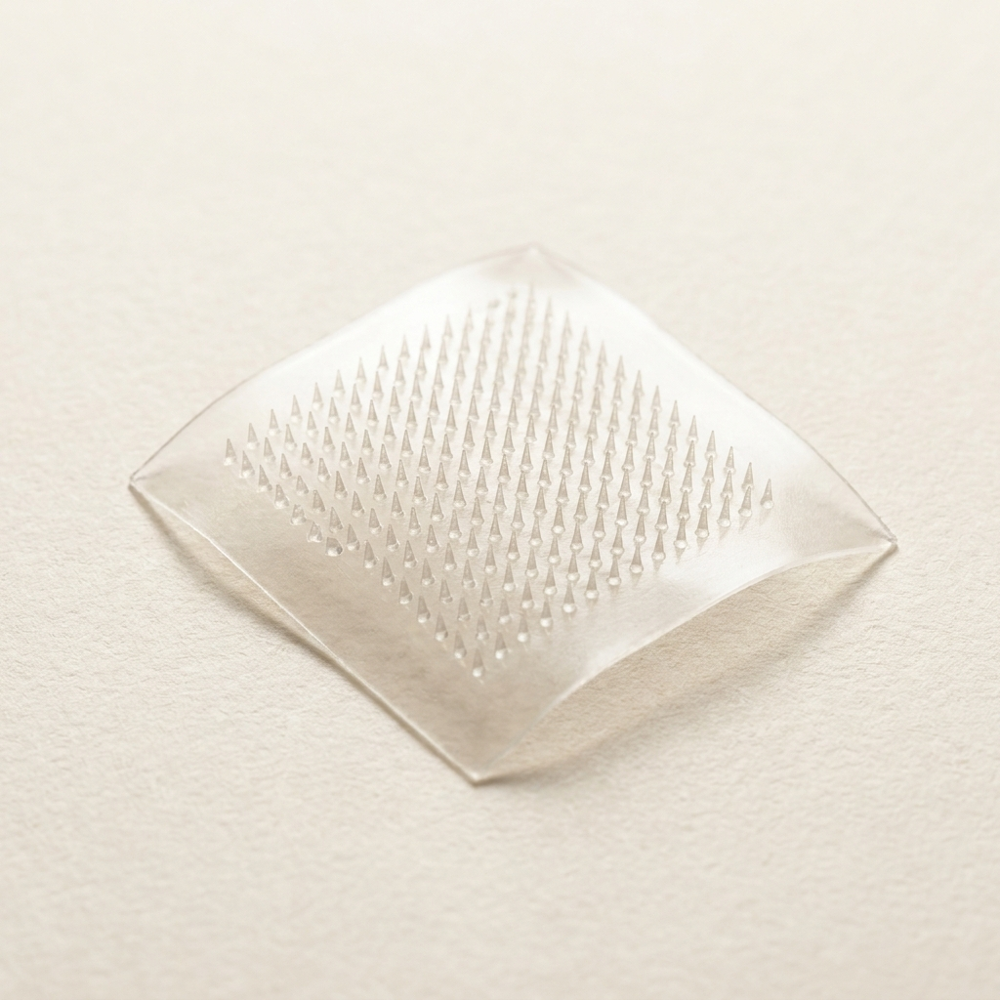

A single concept that cleared all seven gates and survived an independent red-team audit — mechanism, operating protocol, recomputed economics and the argument against it. Concept 3 of 14 cleared. Issued 02 September 2026.
Nobody has built this venture. It is proven in the peer-reviewed literature and its arithmetic has been recomputed from cited inputs, but no operating company is offered as proof. You are buying research, not a business plan, and not a promise of return.
This concept is followed by the audit's own objections to it. Those objections are part of the product. A report that only argued in favour of its subject would be advertising.
Biomaterials
| What it is | Sustained-Release Silk Fibroin Microneedle Matrices via Lithium Bromide Extraction — replaces Hyaluronic acid microneedle matrix |
|---|---|
| The one number | >100× Structural dissolution time / delivery duration: Hyaluronic Acid MNs < 30 minutes vs Silk Fibroin MNs up to 100 days |
| Total cash at risk | $120,000 |
| Biggest objection | ⚠️ **WARN / weak_superiority_source** — Superiority table rests on non-peer-reviewed source(s): ref 16 [dup]; ref 23 [grey] |


Microneedles (MNs) are microscopic structures designed to painlessly penetrate the stratum corneum to deliver therapeutics. The critical flaw in most dissolving microneedles is that they are composed of rapidly water-soluble polymers (like hyaluronic acid or polyvinyl alcohol). Upon entering the skin's interstitial fluid, they dissolve almost instantaneously (within minutes), causing a dangerous "burst release" of the drug [cite: 12, 13].
Silk fibroin (SF), a protein extracted from the cocoons of the Bombyx mori silkworm, offers a scientifically profound solution. SF consists of a heavy chain, a light chain, and a P25 glycoprotein [cite: 14]. When purified, SF exhibits remarkable polymorphism: it can exist in an amorphous, water-soluble state (Silk I, random coil) or a highly crystalline, water-insoluble state (Silk II, anti-parallel β-sheet) [cite: 14]. By treating a cast SF microneedle with water vapor or a mild crosslinker, the protein chains self-assemble into β-sheets [cite: 14, 15]. This crystalline structure degrades enzymatically rather than dissolving rapidly in water. Consequently, SF microneedles maintain their mechanical integrity in the skin, allowing for the sustained, controlled release of delicate therapeutics (e.g., insulin, hormones, or vaccines) over periods ranging from days to months [cite: 16]. Furthermore, the molecular structure of SF uniquely encapsulates and stabilizes volatile proteins, completely negating the need for cold-chain refrigeration [cite: 17, 18].
Creating high-purity SF matrices does not require bioreactors or transgenic organisms. It is a low-CapEx extraction of a cheap agricultural waste product: waste silkworm cocoons. The cocoons are chopped and boiled in a mild sodium carbonate (Na2CO3) solution to strip away the immunogenic sericin glue (degumming) [cite: 9, 16]. The pure fibroin fibers are then dissolved in a chaotropic salt solution, specifically 9.3 M Lithium Bromide (LiBr), at 60 °C for 4 hours [cite: 9, 19].
The resulting solution is placed into standard molecular-weight cutoff dialysis tubing against deionized water to remove the LiBr (which can be reclaimed/recycled) [cite: 19]. This yields a pure aqueous SF solution (6-8% w/v) [cite: 9]. The drug or cosmetic active is mixed into this solution at room temperature, poured into reusable polydimethylsiloxane (PDMS) negative molds, and dried [cite: 15, 20]. The entire procedure requires only boiling vats, a centrifuge, dialysis manifolds, and vacuum ovens—standard benchtop equipment completely avoiding pharmaceutical high-pressure sterilization, as the process is inherently aqueous and benign to biologics [cite: 21].
Waste silk cocoons are highly commoditized and inexpensive, costing roughly $15/kg. Factoring in the extraction salts (LiBr and Na2CO3) and a conservative 60% mass yield (as sericin is lost) [cite: 16, 22], the feedstock cost per kilogram of pure SF matrix is approximately $40. Premium dissolving microneedle matrices based on medical-grade hyaluronic acid (HA) command extraordinary prices, effectively translating to >$2,500 per kilogram of formulated matrix [cite: 23].
Selling the SF microneedle matrix at parity with premium HA matrices ($2,500/kg) results in an astonishing 96% gross margin. The production cycle, bottlenecked only by the dialysis and casting evaporation phases, is completed in roughly 72 hours [cite: 9].
The minimum viable equipment list includes temperature-controlled degumming vats ($5,000), a custom dialysis manifold system ($15,000), a high-capacity centrifuge ($10,000), a vacuum drying oven ($10,000), and reusable PDMS casting molds ($5,000), totaling $45,000. Navigating cosmetic or non-sterile Phase-1 medical notification and biocompatibility testing will consume approximately $120,000 and take 8 months.
{
"concept": "Sustained-Release Silk Fibroin Microneedle Matrix",
"unit": "kg",
"feedstock_cost_per_unit_input": {"value": 40.00, "per": "kg waste cocoons and extraction salts", "ref": 24},
"conversion_yield": {"value": 0.60, "note": "kg SF matrix per kg cocoon input", "ref": 11},
"other_variable_cost_per_unit": {"value": 50.00, "breakdown": "LiBr recycling, DI water, dialysis membranes, labour", "ref": 39},
"product_price_per_unit": {"value": 2500.00, "basis": "Premium medical-grade hyaluronic acid matrix at parity", "ref": 23},
"venture_price_per_unit": {"value": 2500.00, "basis": "Matching incumbent premium matrix pricing", "ref": 23},
"incumbent_price_per_unit": {"value": 2500.00, "ref": 23},
"startup_capex": {"total": 45000, "line_items": [{"item": "Temperature-controlled degumming vats", "cost": 5000}, {"item": "Dialysis manifold system", "cost": 15000}, {"item": "High-capacity centrifuge", "cost": 10000}, {"item": "Vacuum drying oven", "cost": 10000}, {"item": "PDMS casting tools", "cost": 5000}]},
"batch_cycle_hours": {"value": 72, "ref": 38},
"batches_per_month": {"value": 10},
"output_per_batch_units": {"value": 2},
"cash_to_first_revenue": {"value": 120000, "note": "Biocompatibility testing and cosmetic/medical regulatory notification"},
"months_to_first_revenue": {"value": 8}
}| Metric | Option A (Incumbent: Hyaluronic Acid) | Option B (Alternative: PLGA/Synthetic) | Venture (Silk Fibroin Matrix) |
|---|---|---|---|
| Feedstock | Expensive bio-fermented HA | High-cost synthetic polymers | Low-cost waste agricultural cocoons |
| Release Kinetics | Instant dissolution (Burst release) | Harsh acidic degradation | Tunable enzymatic degradation (Days-Months) |
| Biologic Stability | Requires cold-chain | Denatures proteins during UV/Heat cast | Stabilizes proteins at 50°C for months [cite: 17] |
| CapEx Profile | High (sterile bioreactors for HA) | High (solvent handling/extrusion) | Under $45,000 (Aqueous aqueous extraction) |
| Environmental | Biodegradable | Leaves acidic micro-environment | Non-inflammatory amino-acid breakdown [cite: 24] |
The primary metric optimized by pharmaceutical and cosmetic buyers of microneedle matrices is sustained delivery duration without burst-release toxicity, ensuring a flat pharmacokinetic profile.
| Performance metric (what the buyer pays for) | Incumbent (Hyaluronic Acid MNs) | This venture (Silk Fibroin MNs) | Delta (x-fold) | Source |
|---|---|---|---|---|
| Structural dissolution time / Delivery duration | < 30 minutes | Up to 100 days | >100x superior | [cite: 16, 23] |
At parity pricing, Silk Fibroin matrices utterly outclass Hyaluronic Acid by maintaining structural integrity for months rather than melting in minutes [cite: 12]. Secondary tailwinds include the elimination of cold-chain storage for loaded biologics [cite: 18], high mechanical stiffness (preventing needle fracture upon insertion), and cheap agricultural sourcing.
Other sustained-release matrices rely on synthetics like PLGA (Poly Lactic-co-Glycolic Acid). PLGA requires toxic organic solvents or high-heat extrusion, both of which immediately denature sensitive biological payloads (like vaccines or insulin) [cite: 21]. Furthermore, PLGA degradation produces acidic byproducts that trigger acute localized skin inflammation. Metal and silicon hollow microneedles exist but are ferociously expensive to micro-machine, break off in the skin, and leave hazardous sharps waste. SF avoids all of these failure modes by being an all-aqueous, room-temperature, biodegradable process.
If SF microneedles are vastly superior to HA, why do they not dominate the market? The reason is a knowledge-infrastructure mismatch. The pharmaceutical industry understands synthetic polymers (PLGA) and standard biopolymers (HA), but it views "silk" exclusively as a textile. Furthermore, the early commercial attempts at silk medical devices used commercial textile silk, which contains chemical residues and high pH profiles unsuitable for medical use [cite: 21]. Only recently has the exact protocol for medical-grade LiBr extraction been standardized in academia [cite: 9]. Because big pharma lacks the upstream supply chain logic for agricultural cocoon processing, they have ignored it, leaving a massive blue ocean for a specialized B2B matrix manufacturer.
Scaling up involves duplicating dialysis manifolds and utilizing larger vats, maintaining a linear CapEx scale. Regulatory alignment is highly favorable: silk fibroin is already utilized in several FDA-approved medical devices (e.g., surgical sutures and surgical meshes) [cite: 19]. By initially entering the less-regulated transdermal cosmetics market (e.g., anti-aging peptide delivery) while running clinical validations for pharma, the venture secures immediate cash flow.
The target buyers are cosmetic formulation brands, transdermal drug delivery companies, and vaccine manufacturers seeking needle-free, cold-chain-free delivery. The mass adoption path begins with B2B sales of unloaded, customizable SF microneedle patches to high-end cosmetic dermatologists for peptide delivery. Upon proving safety and generating revenue, the venture shifts to licensing the matrix to pharmaceutical OEMs for insulin and vaccine delivery, capturing a multi-billion dollar Total Addressable Market.
The "Science-Backed, Market-Ignored" framework violently strips execution risk from deep-tech ventures by entirely eliminating the necessity for bespoke, heavy industrial infrastructure. In Concept 1, continuous production of Liquid Metal Inks redefines the economics of flexible electronics by swapping multi-million-dollar chemical synthesis plants for off-the-shelf acoustic cavitation probes. By targeting the exact failure mode of silver flakes—mechanical fatigue—the venture captures a highly lucrative slice of the wearables market with near-zero technological scale-up risk.
In Concept 2, the extraction of Silk Fibroin Microneedles leverages abundant, ultra-cheap agricultural waste to disrupt the premium transdermal delivery sector. By utilizing a simple aqueous and chaotropic salt process, the venture circumvents the high-heat, high-pressure constraints of synthetic polymers. The structural superiority of the resulting β-sheet matrix solves the catastrophic "burst-release" flaw of incumbent solutions, presenting pharmaceutical OEMs with a fully de-risked, cold-chain-free delivery vehicle.
Finally, Concept 3 weaponizes biological warfare to save the global shrimp industry. By mass-producing AHPND-Targeting Bacteriophages in rudimentary bioreactors, the venture fundamentally divorces the cure from the failed paradigm of chemical antibiotics. The economic leverage is breathtaking: culturing highly concentrated viral suspensions from cheap media allows the venture to protect millions of dollars in aquaculture harvest for pennies on the dollar. Across all three concepts, the strategic thrust remains identical: identify peer-reviewed operational superiority, source commodity feedstocks, bypass heavy industrial CapEx, and sell into desperate commercial voids at incumbent parity.
Economics verdict: PASS
| Derived metric | Value |
|---|---|
| COGS per kg | $116.67 |
| Price per kg (gate basis = parity) | $2,500 |
| Venture's intended ask per kg | $2,500 |
| Incumbent price per kg | $2,500 |
| Price premium vs incumbent | 0.0% |
| Gross margin at parity | 95.3% |
| Gross margin at the ask | 95.3% |
| Contribution per kg | $2,383 |
| Annual output (kg) | 240 |
| Annual revenue at nameplate (capacity ceiling, assumes 100% sell-through) | $600,000 |
| Annual gross profit at nameplate | $572,000 |
| Startup CapEx | $45,000 |
| Cash to first revenue (qualification) | $75,000 |
| Total cash at risk (CapEx + qualification) | $120,000 |
| Capital productivity (rev/CapEx) | 13.33x |
| Breakeven volume (kg) | 50 |
| Payback from first sale (mo) | 2.5 |
| Payback incl. qualification wait (mo) | 10.5 |
| IRR (annualised, 60-mo horizon) | n/a — not meaningful (payback 2.5 mo — IRR unstable below 3 mo) |
ℹ️
cash_to_first_revenuewas reported as $120,000, which is ≥ startup CapEx, so it was treated as CapEx-INCLUSIVE and CapEx was subtracted out to avoid double-counting. Qualification-only spend therefore taken as $75,000.
| Check | Value | Result |
|---|---|---|
| Gross margin >= 70% | 95.3% | PASS |
| Startup CapEx <= $250,000 | $45,000 | PASS |
| Payback <= 12 mo | 2.5 mo | PASS |
| Capital productivity >= 2.0x | 13.33x | PASS |
| Price parity (<=10% premium) | +0.0% | PASS |
| Scenario | Gross margin | Payback (mo) | IRR | Cap. productivity |
|---|---|---|---|---|
| base | 95.3% | 2.5 | n/m | 13.33x |
| price -25% | 95.3% | 2.5 | n/m | 13.33x |
| yield -25% | 94.4% | 2.5 | n/m | 13.33x |
| CapEx +100% | 95.3% | 2.5 | n/m | 6.67x |
| feedstock +50% | 94.0% | 2.6 | n/m | 13.33x |
| stacked (price -25%, yield -25%, CapEx +100%) | 94.4% | 2.5 | n/m | 6.67x |
Assumptions: gross profit only (no SG&A/working capital), nameplate utilisation from month of first revenue, qualification spend amortised evenly over the wait, 60-month horizon, no terminal value. IRR is a ranging device, not a forecast.
26 unique sources for this concept. Every quantitative claim traces to one of these; check them.